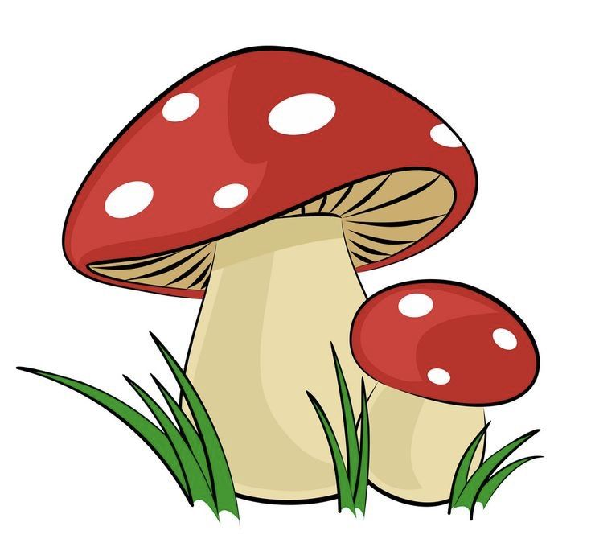

Home | Contact | About | Download Form
Ini adalah contoh link jamur. Coba klik link ini: Meluncur ke Penutup maka kamu akan dibawa ke bagian penutup dari dokumen ini.
Jamur merupakan jenis organisme eukariotik dan termasuk dalam Kingdom Fungi.
Selain itu, jamur berkembang biak dengan 2 cara, yakni secara aseksual dan seksual.
Jamur dapat hidup di tempat yang lembab, air tawar maupun air laut, tempat yang asam,
serta bersimbiosis dengan ganggang sehingga tercipta lumut. Kemudian, jamur tidak
memiliki klorofil, bersifat heterotrof, dan dinding selnya mengandung kitin,
yakni komponen utama penyusun dinding sel jamur.
Nah, sifat heterotrof pada jamur artinya jamur tidak dapat memproduksi makanannya sendiri.
Jadi, jamur hanya mengandalkan hidup dengan menyerap nutrisi dari organisme lainnya.
Cara hidup jamur bervariasi, misalnya melakukan simbiosis mutualisme.
Artinya, organisme lain akan diserap oleh jamur untuk memperoleh makanan.
Kemudian, jamur akan dapat menghasilkan zat tertentu yang berguna untuk simbionnya.
| produk Unggulan | ||
|---|---|---|
|  | ||
| Harga | Rp 150.000 | |
| Klasifikasi |
|
|
Ini adalah penutup dari artikel ini, dan coba perhatikan headingnya. Di sana kita menggunakan id="penutup". Maka elemen ini akan menjadi tujuan dari jamur link.